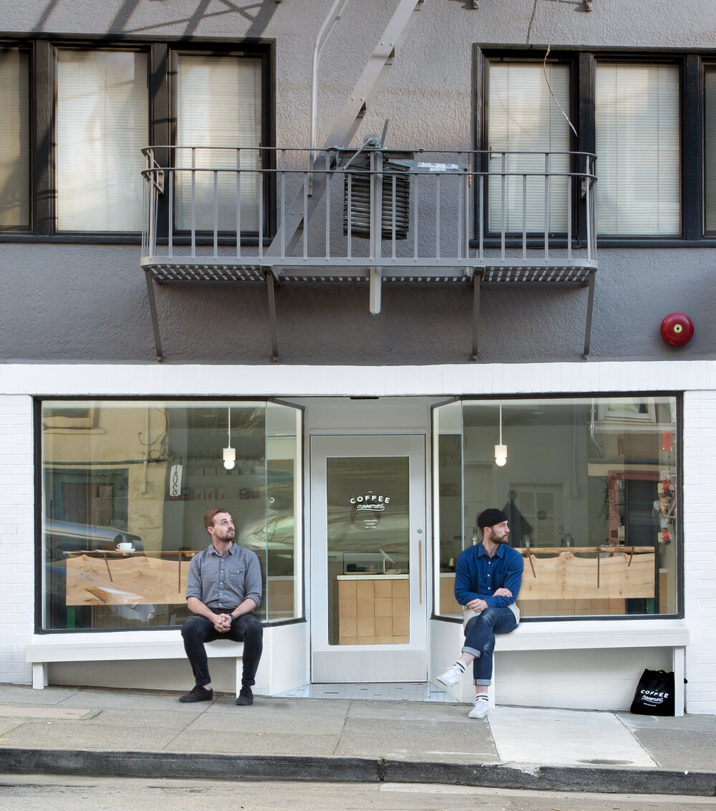

In 2014, Bryan Overstreet had an idea while working at a small café in the northern beaches of Sydney. He realized that the immersive culture around coffee in Australia stood in stark contrast to the transactional nature of American cafés. The communal vibe and celebratory nature of coffee culture Down Under was something Overstreet longed to bring back to the States. So he did.
Bryan Overstreet / Owner & Hospitality Enthusiast
Reef Bessette / Owner & Coffee Scientist
